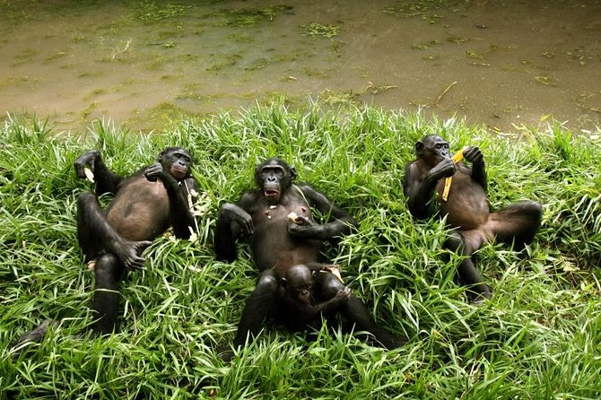

Kinshasa is a vibrant city where music, movement, and daily life pulse with unstoppable energy along the banks of the Congo River. Its streets are alive with color, laughter, and creativity, reflecting the resilience and warmth of its people. From sunrise to nightfall, Kinshasa blends natural beauty and cultural soul into a rhythm that feels both powerful and deeply human.
Must See Spots
Musée National de la République Démocratique du Congo – A fascinating museum with Congolese art, artifacts, and cultural history.
Lola Ya Bonobo Sanctuary – A sanctuary for orphaned bonobos where you can see these close relatives of humans up close.
Kinshasa Zoological Garden (Zoo de Kinshasa) – A zoo featuring over 30 animal species and educational exhibits
Parc de la Vallée de la Nsele – A large nature park ideal for wildlife spotting, picnics and outdoor activities.
Palais de la Nation – Historic landmark and former colonial governor’s residence with architectural significance.
Visitor Tips
Learn a few basic phrases in Lingala or French to communicate more easily
Be cautious when eating street food not all meals are prepared properly by street vendors
Use trusted local guides or transportation services when exploring the city.
cautious at night time to avoid unwanted encounters.
Carry small amounts of cash, as credit cards are not widely accepted.
Main Attraction
Lola ya Bonobo Sanctuary

Bonobos relaxing at Lola ya Bonobo Sanctuary, a protected haven near Kinshasa dedicated to the rescue, care, and conservation of one of humanity’s closest relatives.
I loved reading this blog it really captures the culture of each place and makes me want to visit. This travel blog makes destinations feel alive and easy to explore. The tips and descriptions are both helpful and engaging.